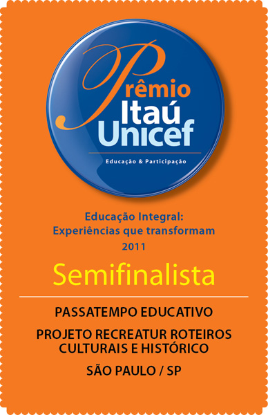
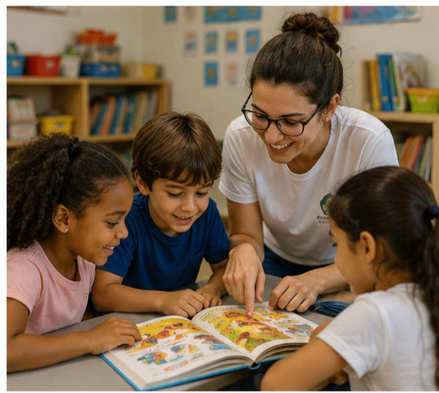
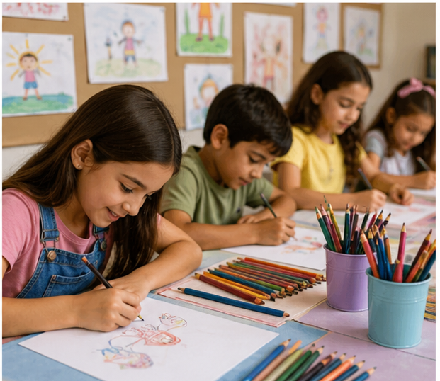

SOBRE NÓS
Passatempo Educativo é uma organização não governamental, sem fins lucrativos, que desenvolve projetos na área educacional, cultural, preservação ambiental e desenvolvimento do turismo sustentável. Reconhecida pelo Ministério da Justiça como OSCIP – Organização Social Civil de Interesse Público sob nº 08071005566.
Atuando há 20 anos na área da educação, nossos projetos têm como objetivos dar continuidade no processo ensino-aprendizagem através de situações práticas com atividades nas escolas, empresas, excursões, estudos do meio, visitas monitoradas, oficinas, workshops, palestras, jogos e gincanas dirigidos, suporte didático para pais e professores além de elaboração de material pedagógico complementar.
Os projetos na cidade de Cotia atendem 16 escolas públicas, sendo beneficiados mais de 11.000 alunos por ano. Projetos de capacitação de jovens na área de recreação lúdica e turismo pedagógico, campeonatos esportivos, concursos literários, exposições sobre a cultura e história do bairro, atividades educacionais, programas de incentivo à leitura são algumas das ações realizadas na região.
Passatempo Educativo com seu Projeto Recreatur Roteiros Culturais e Históricos ficou entre os 5 melhores da 9ª Edição do Prêmio Itaú Unicef. Em 2020, criamos o Projeto Reforço Interativo, uma programação de gameficação e metodologias ativas que atende escolas públicas das regiões Norte, Nordeste, Centro-Oeste e Sudeste.


